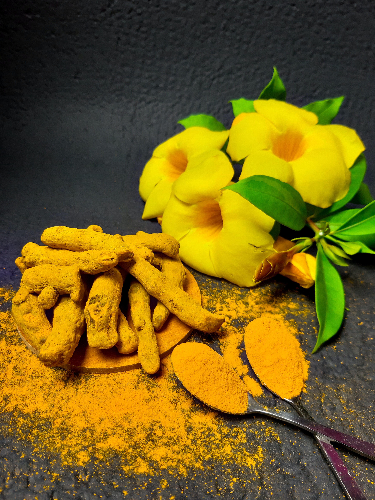
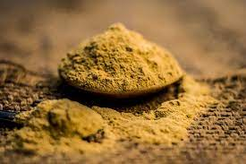

Diabetes
Ayurveda offers a holistic approach to managing diabetes by focusing on diet, lifestyle, and herbal remedies to balance the body's systems.
Gymnema Sylvestre (Gurmar):
Gymnema is often called the "sugar destroyer" in Ayurveda. It may help reduce sugar cravings and support blood sugar control.
Triphla
Triphala, a combination of three fruits, helps improve digestion and may indirectly support blood sugar control by enhancing nutrient absorption.
Bitter Gourd
Bitter gourd is known for its blood sugar-lowering properties. You can consume it as a vegetable or drink its juice.
Neem
Neem leaves are known for their blood-purifying properties. You can consume neem leaves in the form of capsules or drink neem tea.
Cancer
Ayurveda can be used as a complementary approach to support individuals undergoing cancer treatment and help manage symptoms and side effects.
Ashwagandha
Ashwagandha is an adaptogenic herb known for its immune-boosting and stress-reducing properties.
Turmeric
Curcumin, the active compound in turmeric, has anti-inflammatory and antioxidant properties.
Tulsi
Tulsi is known for its immune-enhancing and stress-reducing properties. It may help improve immunity and provide emotional support.
Triphala
Triphala, a combination of three fruits, can help support digestion and detoxification, which may be beneficial during cancer treatment.
Arthritis
Ayurveda offers a range of remedies and holistic approaches to managing arthritis, a condition characterized by inflammation and pain in the joints. These remedies focus on reducing inflammation, improving joint mobility, and providing relief from pain.
Ayurvedic oils
Ayurvedic oils like Mahanarayan oil and Dhanwantharam oil are often used for joint massage. Massaging affected joints with these oils can help improve blood circulation, reduce inflammation, and alleviate pain.
Ginger
Ginger can reduce joint pain and stiffness. It can be consumed in the form of ginger tea or added to meals.
Turmeric
Turmeric can help reduce inflammation, support insulin sensitivity, and potentially improve menstrual regularity.
Guggul
Guggul can reduce inflammation and relieve joint pain. It is available in various forms, including capsules and powders.

PCOS
Ayurveda offers a holistic approach to managing PCOS by addressing the underlying imbalances in the body.
Shatavari
Shatavari can help regulate menstrual cycles, reduce ovarian cysts, and balance hormones. It has a nourishing effect on the reproductive system, making it particularly useful for women with PCOS.
Fenugreek
Fenugreek seeds are rich in soluble fiber and phytoestrogens. They may help regulate blood sugar levels and improve insulin sensitivity, which is often a concern in PCOS.
Turmeric
Turmeric can help reduce inflammation, support insulin sensitivity, and potentially improve menstrual regularity.
Chandraprabha Vati
Chandraprabha Vati is an Ayurvedic herbal formulation that contains various herbs and minerals. It may be used to support urinary and reproductive health in women with PCOS.
Asthama
Asthma is a chronic respiratory condition characterized by inflammation and narrowing of the airways, leading to symptoms like wheezing, shortness of breath, and coughing. Ayurveda offers a holistic approach to managing asthma by addressing underlying imbalances and reducing inflammation.
Pranayam
Pranayama, such as Anulom Vilom (alternate nostril breathing) and Bhramari (humming bee breath), can improve lung capacity and enhance overall respiratory health.
Vasa
Vasa known for its bronchodilator and anti-inflammatory properties, vasa can help relieve congestion and improve breathing.
Licorice
Licorice has anti-inflammatory and soothing effects on the respiratory system. It may help reduce inflammation in the airways.
Trikatu
Trikatu (a blend of ginger, black pepper, and long pepper): Trikatu can enhance lung function and reduce congestion.
Migraines and Headaches
Ayurveda, an ancient system of medicine from India, offers holistic approaches to managing various health conditions, including migraines. It focuses on balancing the body, mind, and spirit to promote overall well-being.
Butterbur
Butterbur (Petasites hybridus): Butterbur is an herb that has been used in Ayurvedic medicine to relieve headaches. It should be used under the guidance of an Ayurvedic practitioner.
Ginger
Ginger (Zingiber officinale): Ginger may help reduce the frequency and severity of migraines. You can consume it in various forms, such as ginger tea or as a supplement.
Shirodhara
Shirodhara is an Ayurvedic therapy that involves pouring warm oil continuously over the forehead. It can help calm the nervous system and reduce migraine symptoms.
Nasya
Nasya involves the administration of herbal oils or powders into the nasal passages. It may be beneficial for some individuals with migraines.
Sleep Disorders
Ayurveda, the traditional system of medicine from India, offers a holistic approach to managing sleep disorders. It believes that imbalances in the body's doshas (Vata, Pitta, and Kapha), along with lifestyle and dietary factors, can contribute to sleep problems. Here are some Ayurvedic solutions for addressing sleep disorders:
Abhyanga
Abhyanga (Self-Massage): Massaging warm sesame oil or coconut oil on the body, especially the feet and head, can help relax the nervous system and promote better sleep.
Panchakarma
In severe cases or chronic sleep disorders, Ayurvedic detoxification treatments like Panchakarma may be recommended to balance the doshas and improve overall health.
Brahmi
Enhances mental clarity and can help reduce anxiety and insomnia.
Jatamansi
Aids in calming the mind and promoting restful sleep.

Acne
Ayurveda, the traditional system of medicine from India, offers a holistic approach to treating acne that focuses on balancing the body's internal energies and addressing the root causes of the condition.
Multani Mitti
Multani Mitti (Fuller's Earth) mixed with rosewater or aloe vera gel can be applied as a face pack to absorb excess oil and cleanse the skin.
Aromatherapy
Essential oils like tea tree oil and lavender oil have antibacterial properties and can be diluted with a carrier oil (such as coconut oil) and applied topically.
Neem
Neem (Azadirachta indica) is a powerful herb known for its anti-inflammatory and antibacterial properties. It can be taken internally as capsules or applied topically in the form of neem oil or paste.
Turmeric
Turmeric (Curcuma longa) has anti-inflammatory and antimicrobial properties. You can consume turmeric in food or take it as a supplement.
Kidney Stones
Ayurveda, the traditional system of medicine from India, offers a holistic approach to treating acne that focuses on balancing the body's internal energies and addressing the root causes of the condition.
Trikatu Churna:
This is a combination of three herbs (ginger, black pepper, and long pepper) known for their digestive and detoxifying properties. It may help in reducing the risk of kidney stone formation
Pashanabheda
This herb is commonly used in Ayurveda to treat kidney stones. It is believed to dissolve stones and relieve pain.
Gokshura (Tribulus terrestris)
Gokshura is known for its diuretic properties and may help in preventing the formation of kidney stones.
Panchakarma
Some Ayurvedic clinics offer Panchakarma treatments, which involve a series of cleansing and detoxification procedures. These treatments aim to balance the doshas and improve overall health.
Heart Disorders
Ayurveda, the traditional system of medicine from India, offers a holistic approach to treating acne that focuses on balancing the body's internal energies and addressing the root causes of the condition.
Arjuna:
This herb is known for its heart-strengthening properties. It is available in various forms, including capsules and powder.
Ashwagandha:
An adaptogenic herb, ashwagandha may help reduce stress, which can benefit heart health.
Guggul:
Guggul resin is used to lower cholesterol levels and support overall heart health.
Hawthorn:
Although not traditionally Ayurvedic, hawthorn is used in some Ayurvedic formulations for heart health.
Digestive Disorders
Ayurveda, a traditional system of medicine from India, offers a holistic approach to treating digestive disorders. It focuses on balancing the body's doshas (Vata, Pitta, and Kapha) and addressing the root causes of digestive issues.
Yoga and Pranayama:
Practicing yoga asanas, such as Pavanamuktasana (wind-relieving pose) and Bhujangasana (cobra pose), can aid digestion.
Deep breathing exercises like Kapalabhati and Anulom Vilom can also be beneficial.
Herbal Teas
Ginger (Ardra), fennel (Saunf), and cumin (Jeera) can be used to make herbal teas to aid digestion.
Triphala
Triphala, a combination of three fruits, is a popular Ayurvedic remedy for constipation.
Aloe vera
Aloe vera and licorice root can help soothe inflammation in the digestive tract.
Tuberculsosis
While Ayurveda can be complementary to modern medicine, it is important to note that tuberculosis (TB) is a serious bacterial infection, and the primary treatment for TB should be conventional medical therapy prescribed by a qualified healthcare professional.
Herbal Remedies:
Get plenty of rest and sleep to support the body's healing process.
Practice stress-reduction techniques such as yoga, meditation, and deep breathing exercises to boost overall immunity.
Avoid exposure to cold and damp environments, as these can aggravate respiratory symptoms.
Lifestyle Recommendations:
Consult an Ayurvedic practitioner for personalized herbal formulations based on your constitution (dosha).
Some Ayurvedic herbs that may be beneficial include tulsi (holy basil), neem, ashwagandha, and guduchi. These herbs have immune-boosting properties.
Ayurvedic Therapies:
Panchakarma: Consult an Ayurvedic practitioner for Panchakarma therapies, which may help detoxify the body and improve immunity.
Personalized Ayurvedic Consultation:
It's crucial to consult with a qualified Ayurvedic practitioner who can assess your individual constitution and recommend a tailored approach to your TB treatment. They can prescribe specific herbs, therapies, and dietary guidelines based on your unique needs.
Stress And Anxiety
Ayurveda, a traditional system of medicine from India, offers a holistic approach to treating digestive disorders. It focuses on balancing the body's doshas (Vata, Pitta, and Kapha) and addressing the root causes of stress issues.
Yoga and Meditation:
Regular practice of yoga asanas (postures) and pranayama (breathing exercises) can help calm the mind and reduce stress.
Meditation, particularly mindfulness meditation, is highly beneficial for managing anxiety.
Ashwagandha
Ashwagandha: An adaptogenic herb that helps the body adapt to stress.
brahmi and Jatamansi
Brahmi: Supports cognitive function and can help calm the mind.
Jatamansi: Useful for reducing anxiety and promoting relaxation.
Aloe vera
Shankhpushpi: Known for its calming and soothing properties.
Tulsi (Holy Basil): Acts as an adaptogen and can reduce stress.
Neurological Disorders:
Ayurveda, an ancient system of medicine from India, offers holistic approaches to various health conditions, including neurological disorders. It's important to note that Ayurvedic treatments should be used in conjunction with conventional medical care for neurological disorders. Always consult with a qualified Ayurvedic practitioner and your healthcare provider before starting any new treatment regimen.
Balancing Doshas:
Ayurveda believes that imbalances in the three doshas (Vata, Pitta, and Kapha) can lead to neurological problems. The treatment approach typically involves identifying the dominant dosha causing the imbalance and using dietary, lifestyle, and herbal remedies to restore balance.
Herbal Remedies:
Brahmi (Bacopa monnieri): Known for its cognitive-enhancing properties, Brahmi is often used to support brain function and memory.
Ashwagandha (Withania somnifera): This adaptogenic herb can help reduce stress and anxiety, which may be beneficial for certain neurological conditions.
Dietary Modifications:
Ayurveda emphasizes the importance of a balanced diet that aligns with your dosha constitution. In general, a diet rich in fresh fruits, vegetables, whole grains, and spices like turmeric and ginger can support neurological health.
Abhyanga (Oil Massage):
Regular oil massages, especially with warm sesame oil, can help calm the nervous system and improve circulation